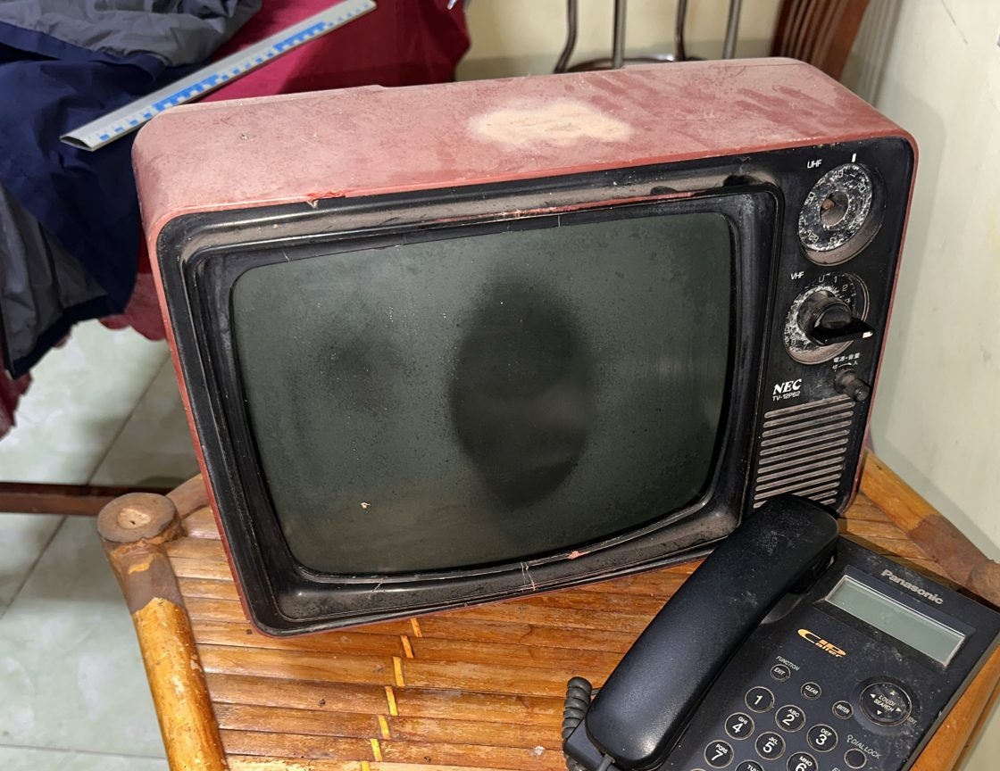

Chiếc tivi kiểu cũ
Vỏ đỏ, màn hình lồi, hai núm vặn chọn kênh bên cạnh. Chiếc tivi gợi nhớ những buổi tối cả gia đình quây quần, cả xóm sang xem nhờ một bộ phim.
Bạn có biết? Đài Truyền hình Việt Nam chính thức phát sóng từ ngày 7/9/1970. Hồi đó tivi là tài sản lớn, nhiều nhà phải chỉnh ăng-ten trên mái mới bắt được hình.